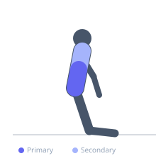
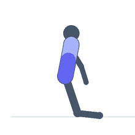

Exercise guide / Ab Wheel Rollout — Kneeling
Ab Wheel Rollout — Kneeling
The kneeling ab wheel rollout is a highly effective anti-extension core exercise in which the athlete rolls a wheel forward from a kneeling position while resisting lumbar hyperextension through maximal core bracing. The movement recruits the transverse abdominis, rectus abdominis, and latissimus dorsi isometrically and eccentrically in a coordinated chain, training the core's ability to resist spinal extension forces — a fundamental quality for athletic performance and injury prevention.
Primary muscles
transverse abdominis
rectus abdominis
Secondary muscles
latissimus dorsi
erector spinae
Stabilizers
deltoid anterior
triceps long head
Equipment
Ab Wheel (Ab Roller)


Starting position
- Kneel on the floor with knees hip-width apart. Grip the ab wheel handles and position the wheel directly under the shoulders.
Setup
- Place a mat under the knees for comfort. Keep the hips at roughly a 90° angle to start.
Steps
- Step 1: Brace the core fully. Begin rolling the wheel forward slowly.
- Step 2: Extend the arms overhead as the torso lowers toward the floor, maintaining a straight line from knees through hips to shoulders.
- Step 3: Roll out as far as can be controlled without the lower back arching.
- Step 4: Pull the wheel back toward the knees using the lats and abs simultaneously.
- Step 5: Return to the starting position and repeat.
Coaching cues
- Squeeze the abs like you're about to be punched
- Pull the wheel back with your lats — elbows to hips
Breathing
- Inhale and brace before rolling out. Exhale on the return.
Range of motion
- Roll out until hips begin to drop — that is the individual limit. Build range gradually.
Tempo
- 3-0-2-0. Slow rollout, deliberate return.
Common mistakes
- Allowing the hips to drop and the lumbar spine to hyperextend during the rollout
- Not engaging the lats on the pullback — leads to arm-only return
Safety
- Regress to a shorter range of motion if back pain occurs
Training
- strength: 5–12 reps
- strength: 3–4 sets
- Rest: {'strength': 90}